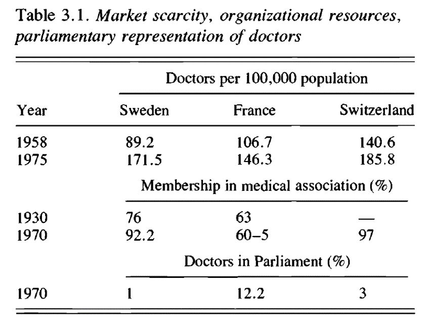
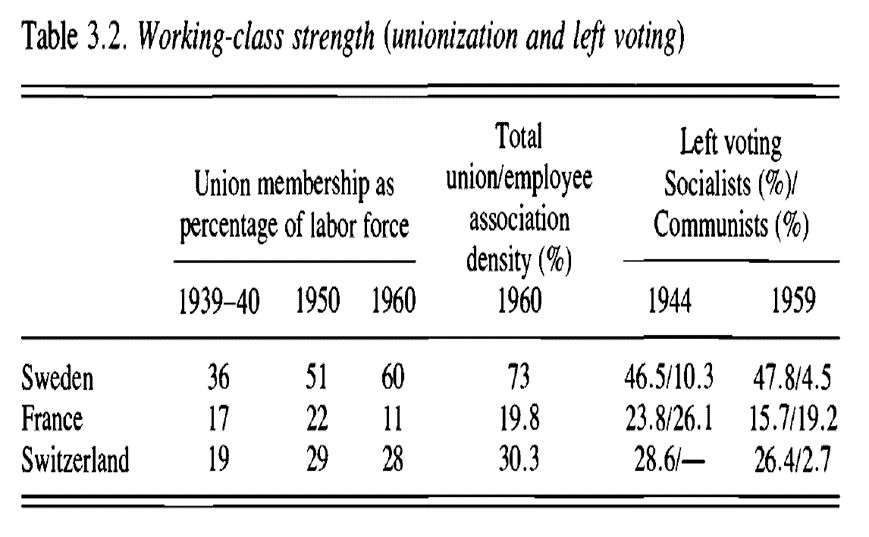
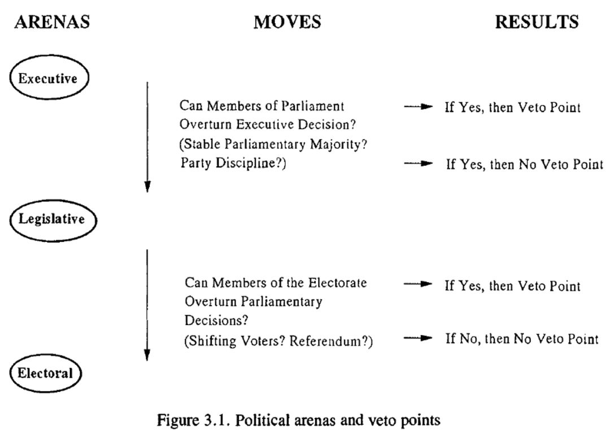
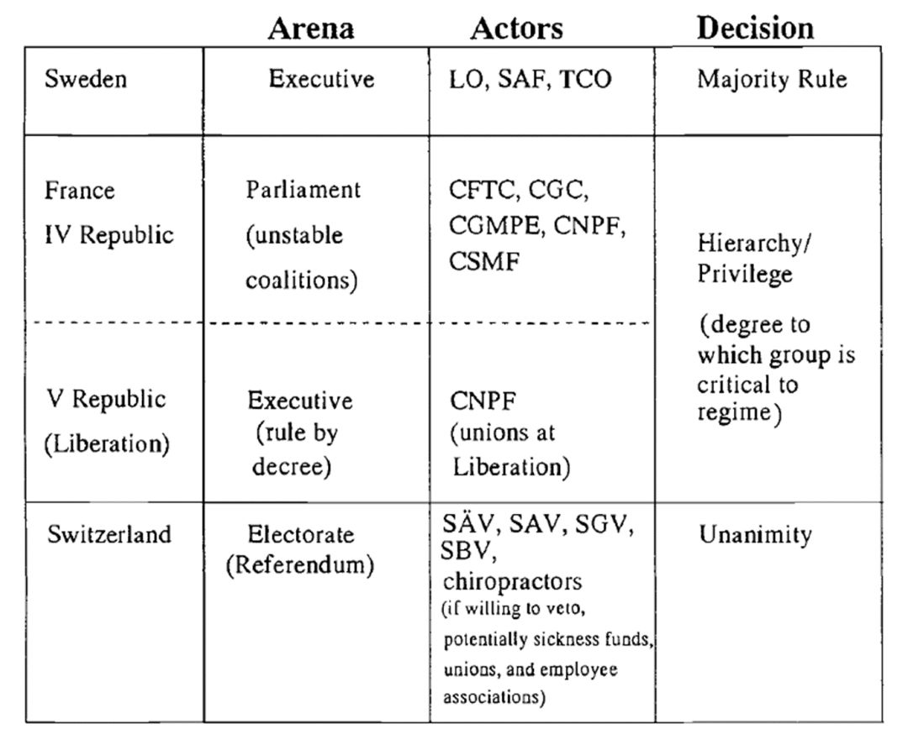

历史制度主义中的否决点如何起作用
收录于合集
文献来源： Ellen M. Immergut, “The rules of the game: The logic of health policy-makingin France, Switzerland, and Sweden”，in Sven Steinmo, Kathleen Thelen, and Frank Longstreth eds. Structuring Politics: Historical Institutionalism in Comparative Politics , Cambridge University Press, 1992.pp57-89.
**
**
作者简介： Ellen M. Immergut，哈佛大学社会学博士，曾任教于美国麻省理工学院和德国康斯坦茨大学，现任德国柏林洪堡大学政治学教授，研究方向包括制度变迁、福利国家政策、民主理论等，个人介绍见https://www.sowi.hu- berlin.de/de/lehrbereiche/comppol/teamDE/emi/#VIta
解释变化是制度分析的核心问题。如果制度具有持久力，那么同一制度如何解释政策的稳定和变化？如果制度会限制不同能动者的行动范围，那么为何能动者有时能摆脱这些约束？本文通过全民健康保险政策的案例来展现制度如何同时解释政策稳定和政策变化，分析的关键是打破“相关性”思维。与通过政策输入（例如不同社会团体的需求或过去的政策遗产）和政策输出（例如特定的法律）的相关性来分析政策制定相比，制度分析的力量在于说明为什么政策输入和政策输出可以在不同的政治体系中以不同的方式连接起来。
一、问题的提出
几乎每一个西欧政府都提出过全民健康保险（保障公民医疗服务的强制性公共项目）的提案，但是政策结果却迥然不同。尽管医疗行业被称为难以逾越的政治否决集团，但是部分欧洲国家的政府已经战胜了实行全民医疗保险和限制医生经济活动的职业阻碍。相比之下，在其他国家，来自医疗界的抗议活动阻碍了政府推行全民医疗保险以及控制医生收费。
本文将比较法国、瑞士和瑞典的全民医疗保险政策。三个国家的政治家都提议推行全民医疗保险以及控制医疗费用。然而从立法建议到法律制定的过程中，法国，瑞士和瑞典的医疗体系却往不同的方向发展。瑞士的全民医疗保险提案被否决，政府在医疗市场的作用受限，只为私人保险提供补贴；法国成功推行强制性的全民医疗保险，它支付私人医生的医疗费用，并对医疗费用实行有限控制；瑞典率先建立全民医疗保险，然后通过公开聘用医生在公立医院工作直接向公民提供医疗服务，将该项目转化为实际上的国家卫生服务。如何解释西欧医疗政策的巨大差异呢？
二、既有的理论解释
“专业优势”理论
由于医疗行业的垄断性，医生被认为有能力限制医疗政策。此外，这些项目能否推行取决于医生的合作，从理论上来说，医生只要呼吁罢工就能够阻止任何他们反对的医疗政策提案。但是，该理论无法解释法国、瑞士和瑞典的医疗行业影响立法决策的能力差异。

瑞士，法国和瑞典的医生都反对医疗改革提案，但是从结果上来看，各国医生影响政策制定的能力不同；医生可获得的资源不足以解释他们在阻止医疗行业社会化方面的程度差异。由于市场的稀缺性，瑞典医疗专业在三者中处于最有利的地位。然而，虽然瑞典医生的供应最短缺，但瑞士的医生最有影响力；从组织化水平来看，法国医学界应该是组织力量最弱的。然而，法国的医生并不是政治影响力最小的医生群体，瑞典的医生才是；就罢工而言，案例表明医生协会的政治胜利与罢工无关。在政治上有影响力的医生协会无需采取罢工的手段。
工会和左翼政党对全民医疗保险项目的政治需求
在这3个国家中，工会的联合程度以及社会主义政党所收到的选票情况都有差异。但是二者要么不符合各国的政策结果，要么不符合政策制定进程。三种政治体系背后的制度性动力决定了政府在何种程度上能够引入改革提案。这些制度性机制（而不是左翼政党获得的选票数量）为每个国家的政治可能性设置了限制。

从工人和雇员的联合程度来看，瑞典>瑞士
法国（联合程度从高到低），政策结果则是瑞典>法国>瑞士（社会化程度从高到低）。因此，各级工会组织可以解释为什么瑞典政府可能在提供广泛的公共医疗方面面临更大的压力，但他们不能解释法国和瑞士的结果差异。
从政治党派之争来看，瑞典社会民主党没有以多数票击败资产阶级政党，但所有的瑞典政党都同意全民医疗保险政策，最早采取行动的是自由党；法国医疗保险项目是由戴高乐通过行政命令推行的；瑞士社会民主党并没有与激进的民主党和天主教保守派进行对抗，这三个政党反而组成了推行全民健康保险项目的联盟，但该项目在全民公投中被否决。全民医疗保险政策不能简单归结为左翼政党与中间、右翼政党之间的对抗。
国家的作用
国家内部的所有能动者都在一定程度上塑造了政策冲突，政策不再被认为是各种社会群体需求的产物。这种观点在不同程度上强调公务员、国家行政能力、政策遗产，国家结构以及更经典的问题的作用。然而这种方法不能解释立法的变化。法国、瑞士和瑞典的医疗政策有共同的出发点，但在推动新法律的确立时出现分歧。政策遗产或路径依赖无法解释这样的现象，国家的能力也不能解释医疗政策的结果。
三、制度和否决点
**
**
本文主要从制度、宪法性规则以及选举结果的角度来说明为什么政治决策在不同的政体下遵循不同的政治模式。政治决策不是一个时间点上的单一决定。相反，他们是由不同机构的不同能动者所做出的一系列决策所构成。简单地说，制定一项法律需要在所有决策环节获得连续性的投票通过。利益集团影响立法结果的能力取决于威胁法律通过的能力，或者说是说服那些持有关键否决权的代表反对立法的权力。但是否决点出现的可能性不是随机的，它可以通过不同政治场域的党派构成以及决策在不同政治场域间的转换规则来预测。宪法条款通过设立一种程序性规则来实现当选代表之间的权力分配，这为否决点的出现创造了机会。同时，否决机会受到选举结果和政党制度特征的影响。
行政机关推行政策的能力取决于行政决策在后续的决策过程中被批准的可能性。如果行政机关在宪法上是独立于议会，那么行政机关将采取直接的行动而无需顾及议会，行政机关的决策就是最后的决定，议会没有否决权。但如果宪法要求议会批准，那么决策程序将向议会转移。如果行政机关享有稳定的议会多数的支持，且党的纪律是发挥作用的，议会推翻行政机关决策的可能性是极低的。因此，尽管议会被正式要求审批行政机关的决策，党派的影响将导致议会成为橡皮图章式的立法机关。
如果行政机关不能稳定的获得议会多数的支持，或者如果党的纪律不要求议会成员做出与行政机关的同党人士一样的投票，议会推翻行政机关决策的可能性要大得多。此时，议会将成为一个关键的否决点。
在大多数政治制度中，议会的决定是制定法律的最后一步。然而，在正式的宪法规则允许选民推翻议会决定的情况下，民众对立法机关的决策进行投票的可能性是存在的。在这种情况下，选举场域成为一个有效的否决点。或者，当选举发生变化或临近选举时，议会议员对选民的反应特别敏感，选举场域可能成为特定政治体系中的决定点。

四、三个案例：法国、瑞士和瑞典
**
**
在法兰西第四共和国期间，法国议会形成否决点。政府权力来自于议会，政党众多且内部缺乏纪律，为吸引选民随时改变立场。破坏执政联盟的可能性是利益集团权力的关键。解放运动时期的特殊宪法保护，阻止了议会议员推翻行政决定的行动，否决点也就不再有什么意义，决策中心从议会转移到了政府。1944年春，民族抵抗委员会起草了经济和社会计划，在此基础上，1945年10月4日和9日，行政部门直接颁布了社会保障法令。直接的行政特权是短暂的，缺乏稳定的议会联合为利益集团的投票交易提供了机会，各方开始反对全民医疗保险，改革陷入僵局。第五共和国的建立彻底改变了游戏规则，行政部门由直接选举产生，不经议会同意可直接颁布行政法规。戴高乐政府在上任两年内颁布了改革方案，彻底重组医院系统，并实行控制医疗行业费用的新制度。在法国的案例中，议会否决点使利益集团通过威胁议会多数派来施加立法压力。然而，一旦行政部门能够绕过议会，尽管这些传统的否决团体抗议，改革依然可以通过。
在瑞士，所有立法都受到全民公决的制约，全民公决是关键否决点，有效地将政策制定从行政部门和议会转移到了选举场域，全民公决投票更多的是否定而不是肯定。虽然利益集团无法控制全民公决的结果，但是它们可决定是否发起全民公决，因此它们是全民公决的守门员。政府在立法准备阶段需要提前强调利益集团的要求，仔细考虑利益集团的看法。1954年政府准备了生育保险计划，增加健康保险的联邦补贴，控制医生费用，但当议会与利益集团协商后发现他们对政府改革的分歧太大之后便撤回了提案。作为决定发起全民公决投票的关键因素，利益集团能够要求来自行政当局和议会双方的让步。
瑞典的内阁首相通常由在议会中占多数席位的政党或政党联盟的领袖担任，对议会负责，这意味着政策制定权集中在行政首脑手中，并且当行政提案通过议会的可能性很高的时候，利益集团会被迫让步；而在稳定的议会多数席位情况下意味着控制了行政的政党就可以控制公民的投票权。因此，瑞典的政治制度没有否决点，政府能够制定和执行决策，在以后的环节中几乎没有否决权。这是制度设计与意外的选举胜利巧妙结合的结果。1948年的改革试图由政府提供医生的工资并且消除所有形式的私人医疗，潜在的选举失败给社会民主党的对手提供了一个否决机会，然而这个时刻一过，政府就在没有咨询医疗协会的情况下继续推进了许多卫生政策。
总之，宪法规则和选举结果（政党的分布情况）对政府推行新的政策的能力产生不同的约束力。这些制度性和政治性障碍，引导着政策决策在不同政体中沿着不同的路径进行。否决的具体机制，正是政治家或选民有权批准或阻止政策建议的机制。否决点不是物理意义上的实体，而是在决策过程本身的逻辑中产生策略不确定性的点。即使是宪法规则或选举结果的细微变化，都可能改变否决点的位置及其战略重要性。正式的宪法规则和选举结果建立了一个政策决策的框架，为利益集团提供了影响政治决策的机会。
五、总结
医疗行业对卫生政策的影响力比我们设想的要小。影响力的大小依不同的政治体系所能提供的机会而定，而不是根据医疗组织的不同或医疗许可或市场垄断的差异而定。否决机会使政治决定可能在决策过程的不同阶段被推翻。宪法规定和选举结果对政府推行改革的能力有着明显的限制。这些障碍反过来又成为希望阻止立法的利益集团的有用工具，除非他们的要求得到满足，否则他们将威胁这一进程。因此，这些制度性机制的特殊性改变了相关政治行动者的组合和隐含的决策规则。换言之，各制度为政治能动者的行动建立了策略背景，从而改变了具体政策冲突的结果。

制度的起源在时间上独立于能动者和他们的策略。制度当然是由参与政治权力斗争的社会能动者创造出来的。然而，参与体制设计斗争的行为者并不一定、事实上很少是那些参与后来的政策冲突的能动者。因此，制度以某种方法使社会结构冻结的观点并不特别有用。要理解制度对当前政策冲突的影响，必须分析制度为当前参与者提供的激励、机会和约束。在这些制度内，可能不只有一种行动方向。事态的发展同等依赖于历史的偶然性与能动者的创造性和制度的约束。此外，这些能动者经常犯错。这些制度告诉我们什么样的行动可能会带来成功或失败，但它们不能预测这些能动者的最终选择。因此，历史的社会逻辑不能被基于政治制度的历史效率所取代。
*特别感谢中国人民大学“历史制度主义专题研究”课程的老师和各位同学对本文编译的帮助。


政观
感谢您支持学术公益
微信扫一扫赞赏作者 __赞赏
已喜欢，对作者说句悄悄话
取消 __
发送给作者
发送
最多40字，当前共字
上一页 1/3 下一页
长按二维码向我转账
感谢您支持学术公益
受苹果公司新规定影响，微信 iOS 版的赞赏功能被关闭，可通过二维码转账支持公众号。